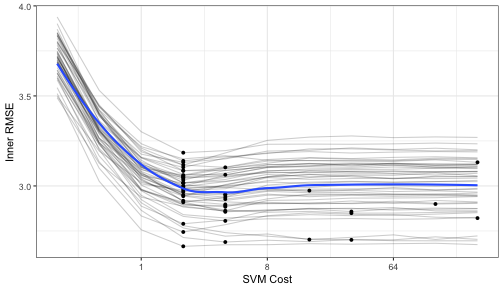
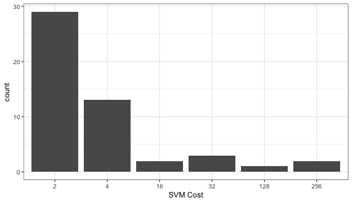
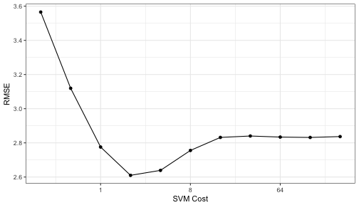

Nested Resampling with rsample
A typical scheme for splitting the data when developing a predictive model is to create an initial split of the data into a training and test set. If resampling is used, it is executed on the training set where a series of binary splits is created. In rsample, we use the term analysis set for the data that are used to fit the model and the assessment set is used to compute performance:

A common method for tuning models is grid search where a candidate set of tuning parameters is created. The full set of models for every combination of the tuning parameter grid and the resamples is created. Each time, the assessment data are used to measure performance and the average value is determined for each tuning parameter.
The potential problem is, once we pick the tuning parameter associated with the best performance, this value is usually quoted as the performance of the model. There is serious potential for optimization bias since we uses the same data to tune the model and quote performance. This can result in an optimistic estimate of performance.
Nested resampling does an additional layer of resampling that separates the tuning activities from the process used to estimate the efficacy of the model. An outer resampling scheme is used and, for every split in the outer resample, another full set of resampling splits are created on the original analysis set. For example, if 10-fold cross-validation is used on the outside and 5-fold cross-validation on the inside, a total of 500 models will be fit. The parameter tuning will be conducted 10 times and the best parameters are determined from the average of the 5 assessment sets.
Once the tuning results are complete, a model is fit to each of the outer resampling splits using the best parameter associated with that resample. The average of the outer method’s assessment sets are a unbiased estimate of the model.
To get started, let’s load the packages that will be used in this post.
library(rsample)
library(purrr)
library(dplyr)
library(ggplot2)
library(scales)
library(mlbench)
library(kernlab)
library(sessioninfo)
theme_set(theme_bw())We will simulate some regression data to illustrate the methods. The function mlbench::mlbench.friedman1 can simulate a complex regression data structure from the original MARS publication. A training set size of 100 data points are generated as well as a large set that will be used to characterize how well the resampling procedure performed.
sim_data <- function(n) {
tmp <- mlbench.friedman1(n, sd=1)
tmp <- cbind(tmp$x, tmp$y)
tmp <- as.data.frame(tmp)
names(tmp)[ncol(tmp)] <- "y"
tmp
}
set.seed(9815)
train_dat <- sim_data(100)
large_dat <- sim_data(10^5)To get started, the types of resampling methods need to be specified. This isn’t a large data set, so 5 repeats of 10-fold cross validation will be used as the outer resampling method that will be used to generate the estimate of overall performance. To tune the model, it would be good to have precise estimates for each of the values of the tuning parameter so 25 iterations of the bootstrap will be used. This means that there will eventually be 5 * 10 * 25 = 1250 models that are fit to the data per tuning parameter. These will be discarded once the performance of the model has been quantified.
To create the tibble with the resampling specifications:
results <- nested_cv(train_dat,
outside = vfold_cv(repeats = 5),
inside = bootstraps(25))
results
## # 10-fold cross-validation repeated 5 times
## # Nested : vfold_cv(repeats = 5) / bootstraps(25)
## # A tibble: 50 x 4
## splits id id2 inner_resamples
## <list> <chr> <chr> <list>
## 1 <S3: rsplit> Repeat1 Fold01 <tibble [25 x 2]>
## 2 <S3: rsplit> Repeat1 Fold02 <tibble [25 x 2]>
## 3 <S3: rsplit> Repeat1 Fold03 <tibble [25 x 2]>
## 4 <S3: rsplit> Repeat1 Fold04 <tibble [25 x 2]>
## 5 <S3: rsplit> Repeat1 Fold05 <tibble [25 x 2]>
## 6 <S3: rsplit> Repeat1 Fold06 <tibble [25 x 2]>
## 7 <S3: rsplit> Repeat1 Fold07 <tibble [25 x 2]>
## 8 <S3: rsplit> Repeat1 Fold08 <tibble [25 x 2]>
## 9 <S3: rsplit> Repeat1 Fold09 <tibble [25 x 2]>
## 10 <S3: rsplit> Repeat1 Fold10 <tibble [25 x 2]>
## # ... with 40 more rowsThe splitting information for each resample is contained in the split objects. Focusing on the second fold of the first repeat:
results$splits[[2]]
## <90/10/100><90/10/100> indicates the number of data in the analysis set, assessment set, and the original data.
Each element of inner_resamples has its own tibble with the bootstrapping splits.
results$inner_resamples[[5]]
## # Bootstrap sampling with 25 resamples
## # A tibble: 25 x 2
## splits id
## <list> <chr>
## 1 <S3: rsplit> Bootstrap01
## 2 <S3: rsplit> Bootstrap02
## 3 <S3: rsplit> Bootstrap03
## 4 <S3: rsplit> Bootstrap04
## 5 <S3: rsplit> Bootstrap05
## 6 <S3: rsplit> Bootstrap06
## 7 <S3: rsplit> Bootstrap07
## 8 <S3: rsplit> Bootstrap08
## 9 <S3: rsplit> Bootstrap09
## 10 <S3: rsplit> Bootstrap10
## # ... with 15 more rowsThese are self-contained, meaning that the bootstrap sample is aware that it is a sample of a specific 90% of the data:
results$inner_resamples[[5]]$splits[[1]]
## <90/37/90>To start, we need to define how the model will be created and measured. For our example, a radial basis support vector machine model will be created using the function kernlab::ksvm. This model is generally thought of as having two tuning parameters: the SVM cost value and the kernel parameter sigma. For illustration, only the cost value will be tuned and the function kernlab::sigest will be used to estimate sigma during each model fit. This is automatically done by ksvm.
After the model is fit to the analysis set, the root-mean squared error (RMSE) is computed on the assessment set. One important note: for this model, it is critical to center and scale the predictors before computing dot products. We don’t do this operation here because mlbench.friedman1 simulates all of the predictors to be standard uniform random variables.
Our function to fit a single model and compute the RMSE is:
# `object` will be an `rsplit` object from our `results` tibble
# `cost` is the tuning parameter
svm_rmse <- function(object, cost = 1) {
y_col <- ncol(object$data)
mod <- ksvm(y ~ ., data = analysis(object), C = cost)
holdout_pred <- predict(mod, assessment(object)[-y_col])
rmse <- sqrt(mean((assessment(object)$y - holdout_pred)^2, na.rm = TRUE))
rmse
}
# In some case, we want to parameterize the function over the tuning parameter:
rmse_wrapper <- function(cost, object) svm_rmse(object, cost)For the nested resampling, a model needs to be fit for each tuning parameter and each bootstrap split. To do this, a wrapper can be created:
# `object` will be an `rsplit` object for the bootstrap samples
tune_over_cost <- function(object) {
results <- tibble(cost = 2^seq(-2, 8, by = 1))
results$RMSE <- map_dbl(results$cost,
rmse_wrapper,
object = object)
results
}Since this will be called across the set of outer cross-validation splits, another wrapper is required:
# `object` is an `rsplit` object in `results$inner_resamples`
summarize_tune_results <- function(object) {
# Return row-bound tibble that has the 25 bootstrap results
map_df(object$splits, tune_over_cost) %>%
# For each value of the tuning parameter, compute the
# average RMSE which is the inner bootstrap estimate.
group_by(cost) %>%
summarize(mean_RMSE = mean(RMSE, na.rm = TRUE),
n = length(RMSE))
}Now that those functions are defined, we can execute all the inner resampling loops:
tuning_results <- map(results$inner_resamples, summarize_tune_results) tuning_results is a list of data frames for each of the 50 outer resamples.
Let’s make a plot of the averaged results to see what the relationship is between the RMSE and the tuning parameters for each of the inner bootstrapping operations:
pooled_inner <- tuning_results %>% bind_rows
best_cost <- function(dat) dat[which.min(dat$mean_RMSE),]
p <- ggplot(pooled_inner, aes(x = cost, y = mean_RMSE)) +
scale_x_continuous(trans='log2') +
xlab("SVM Cost") + ylab("Inner RMSE")
for(i in 1:length(tuning_results))
p <- p +
geom_line(data = tuning_results[[i]], alpha = .2) +
geom_point(data = best_cost(tuning_results[[i]]), pch = 16)
p <- p + geom_smooth(data = pooled_inner, se = FALSE)
p
## `geom_smooth()` using method = 'loess'
Each grey line is a separate bootstrap resampling curve created from a different 90% of the data. The blue line is a loess smooth of all the results pooled together.
To determine the best parameter estimate for each of the outer resampling iterations:
cost_vals <- tuning_results %>% map_df(best_cost) %>% select(cost)
results <- bind_cols(results, cost_vals)
ggplot(results, aes(x = factor(cost))) + geom_bar() + xlab("SVM Cost")
Most of the resamples produced an optimal cost values of 2.0 but the distribution is right-skewed due to the flat trend in the resampling profile once the cost value becomes 10 or larger.
Now that we have these estimates, we can compute the outer resampling results for each of the 50 splits using the corresponding tuning parameter value:
results$RMSE <- map2_dbl(results$splits, results$cost, svm_rmse)
summary(results$RMSE)
## Min. 1st Qu. Median Mean 3rd Qu. Max.
## 1.086 2.183 2.562 2.689 3.191 4.222The RMSE estimate using nested resampling is 2.69.
What is the RMSE estimate for the non-nested procedure when only the outer resampling method is used? For each cost value in the tuning grid, 50 SVM models are fit and their RMSE values are averaged. The table of cost values and mean RMSE estimates is used to determine the best cost value. The associated RMSE is the biased estimate.
not_nested <- map(results$splits, tune_over_cost) %>%
bind_rows
outer_summary <- not_nested %>%
group_by(cost) %>%
summarize(outer_RMSE = mean(RMSE),
n = length(RMSE))
outer_summary
## # A tibble: 11 x 3
## cost outer_RMSE n
## <dbl> <dbl> <int>
## 1 0.25 3.565595 50
## 2 0.50 3.119439 50
## 3 1.00 2.775602 50
## 4 2.00 2.609950 50
## 5 4.00 2.639033 50
## 6 8.00 2.755651 50
## 7 16.00 2.831902 50
## 8 32.00 2.840183 50
## 9 64.00 2.833896 50
## 10 128.00 2.831717 50
## 11 256.00 2.836863 50
ggplot(outer_summary, aes(x = cost, y = outer_RMSE)) +
geom_point() +
geom_line() +
scale_x_continuous(trans='log2') +
xlab("SVM Cost") + ylab("Inner RMSE")
The non-nested procedure estimates the RMSE to be 2.61. Both estimates are fairly close and would end up choosing a cost parameter value of 2.0.
The approximately true RMSE for an SVM model with a cost value of 2.0 and be estimated with the large sample that was simulated at the beginning.
finalModel <- ksvm(y ~ ., data = train_dat, C = 2)
large_pred <- predict(finalModel, large_dat[, -ncol(large_dat)])
sqrt(mean((large_dat$y - large_pred)^2, na.rm = TRUE))
## [1] 2.696096The nested procedure produces a closer estimate to the approximate truth but the non-nested estimate is very similar. There is some optimization bias here but it is very small (for these data and this model).
The R markdown document used to create this post can be found here
The session information is:
session_info()
## ─ Session info ──────────────────────────────────────────────────────────
## setting value
## version R version 3.3.3 (2017-03-06)
## os macOS Sierra 10.12.6
## system x86_64, darwin13.4.0
## ui X11
## language (EN)
## collate en_US.UTF-8
## tz America/New_York
## date 2017-09-03
##
## ─ Packages ──────────────────────────────────────────────────────────────
## package * version date source
## assertthat 0.2.0 2017-04-11 CRAN (R 3.3.2)
## bindr 0.1 2016-11-13 CRAN (R 3.3.2)
## bindrcpp * 0.2 2017-06-17 cran (@0.2)
## broom * 0.4.2 2017-02-13 CRAN (R 3.3.2)
## clisymbols 1.2.0 2017-05-21 CRAN (R 3.3.2)
## colorspace 1.3-2 2016-12-14 CRAN (R 3.3.2)
## dplyr * 0.7.2 2017-07-20 cran (@0.7.2)
## evaluate 0.10.1 2017-06-24 CRAN (R 3.3.2)
## foreign 0.8-67 2016-09-13 CRAN (R 3.3.3)
## ggplot2 * 2.2.1 2016-12-30 CRAN (R 3.3.2)
## glue 1.1.1 2017-06-21 CRAN (R 3.3.2)
## gtable 0.2.0 2016-02-26 CRAN (R 3.3.0)
## highr 0.6 2016-05-09 CRAN (R 3.3.0)
## kernlab * 0.9-25 2016-10-03 CRAN (R 3.3.0)
## knitr * 1.17 2017-08-10 CRAN (R 3.3.2)
## labeling 0.3 2014-08-23 CRAN (R 3.3.0)
## lattice 0.20-35 2017-03-25 CRAN (R 3.3.3)
## lazyeval 0.2.0 2016-06-12 CRAN (R 3.3.0)
## magrittr 1.5 2014-11-22 CRAN (R 3.3.0)
## mlbench * 2.1-1 2012-07-10 CRAN (R 3.3.0)
## mnormt 1.5-5 2016-10-15 CRAN (R 3.3.0)
## munsell 0.4.3 2016-02-13 CRAN (R 3.3.0)
## nlme 3.1-131 2017-02-06 CRAN (R 3.3.3)
## pkgconfig 2.0.1 2017-03-21 cran (@2.0.1)
## plyr 1.8.4 2016-06-08 CRAN (R 3.3.0)
## psych 1.7.3.21 2017-03-22 CRAN (R 3.3.2)
## purrr * 0.2.3 2017-08-02 cran (@0.2.3)
## R6 2.2.2 2017-06-17 cran (@2.2.2)
## Rcpp 0.12.12 2017-07-15 cran (@0.12.12)
## reshape2 1.4.2 2016-10-22 CRAN (R 3.3.3)
## rlang 0.1.2 2017-08-09 cran (@0.1.2)
## rsample * 0.0.1 2017-07-08 CRAN (R 3.3.3)
## scales * 0.5.0 2017-08-24 CRAN (R 3.3.2)
## sessioninfo * 1.0.0 2017-06-21 CRAN (R 3.3.2)
## stringi 1.1.5 2017-04-07 CRAN (R 3.3.2)
## stringr 1.2.0 2017-02-18 CRAN (R 3.3.2)
## tibble 1.3.4 2017-08-22 cran (@1.3.4)
## tidyr 0.7.0 2017-08-16 cran (@0.7.0)
## withr 2.0.0 2017-07-28 CRAN (R 3.3.2)(This article was originally posted at http://appliedpredictivemodeling.com)